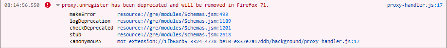

This method was deprecated in Firefox 68 and removed in Firefox 71. In Firefox 68–70, calling this method logs an error message to the console:

Unregisters a Proxy Auto-Configuration (PAC) file. that was registered by an earlier call to {{WebExtAPIRef("proxy.register()")}}.
This is an asynchronous function that returns a Promise.
var unregistering = browser.proxy.unregister()
None.
A Promise that will be fulfilled with no arguments when the PAC file has been unregistered.
browser.proxy.unregister();
{{WebExtExamples}}
{{Compat}}
Microsoft Edge compatibility data is supplied by Microsoft Corporation and is included here under the Creative Commons Attribution 3.0 United States License.